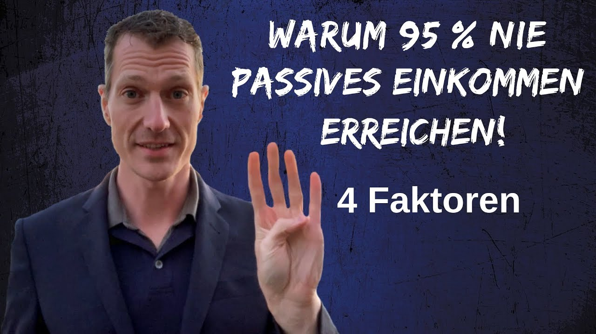

Welcome to Passiv geld verdienen
Passiv Online Geld Verdienen - Online Geld verdienen und mit Hilfe des Internets Zeit- sowie Ortsunabhängig arbeiten. Baue Dir mit unseren Möglichkeiten, Tipps und Tricks Dein eigenes Online Business auf und finde einen Weg in Deine finanzielle Freiheit.
2020.11.28 10:39Online Business Evergreensystem 3.0 YouTube Kurs 2.0 Insta Masterclass Start Up Produkt Affiliate Kickstarter Digital Money Maker Bücher Network Marketing All In! Online Business Sprenge Deine Grenzen Maximale Rendite Online Marketing Neukundenlawine Geldmaschine Internet Traffic / PPC Facebook Meisterkurs FB Ads Anleitung 2.0 Google Adwords Kurs Jugl App Marketing Tools EZPage Webinaris WebinarFly Goolux24 Klick-Tipp SociPOWER – FB Bot OptimizePress Kryptowährung / Bitcoin MarketPeak Masterpool Token Bitphoenix Token PEAK Token Masternodes Crypto Wealth Center Exmo Wallet AdvCash Krypto-Lexikon Aktien Geld verdienen mit Aktien Bitcoin T-Shirts Veranstaltungen Marketingoffensive Contra 2018 Webhosting ALL-INKL Über mich
Online Business Evergreensystem 3.0 YouTube Kurs 2.0 Insta Masterclass Start Up Produkt Affiliate Kickstarter Digital Money Maker Bücher Network Marketing All In! Online Business Sprenge Deine Grenzen Maximale Rendite Online Marketing Neukundenlawine Geldmaschine Internet Traffic / PPC Facebook Meisterkurs FB Ads Anleitung 2.0 Google Adwords Kurs Jugl App Marketing Tools EZPage Webinaris WebinarFly Goolux24 Klick-Tipp SociPOWER – FB Bot OptimizePress Kryptowährung / Bitcoin MarketPeak Masterpool Token Bitphoenix Token PEAK Token Masternodes Crypto Wealth Center Exmo Wallet AdvCash Krypto-Lexikon Aktien Geld verdienen mit Aktien Bitcoin T-Shirts Veranstaltungen Marketingoffensive Contra 2018 Webhosting ALL-INKL Über mich
PEAK DeFi Wallet App Erfahrungen: Die dezentrale App von MarketPeak
3. Oktober 20204.9 / 5 ( 61 votes ) Die PEAK DeFi Wallet App steht ab sofort zum Download bereit. Hierbei handelt es sich um eine komplett dezentrale Wallet App, welche ein weiterer Meilenstein für das PEAK Ökosystem, MarketPeak und die kommende […]
Read More 2 CommentsGeld Verdienen Mit Kryptowährungen / Kryptowährung / Bitcoin
MarketPeak Neujahrs-Special: 50 PEAK Token gratis!
31. Dezember 2019
Das Fintech-Unternehmen MarketPeak startet einen Airdrop für neue Mitglieder und verschenkt 50 PEAK Token. Der PEAK Token wird bereits Anfang 2020 auf drei weltweit führenden Börsen, Vindax, P2PB2B und Coinsbit gelistet. Hierbei kannst du nicht nur …
Read More No CommentPEAK Token von MarketPeak Offizielle Listung auf der Börse Coinsbit!
20. Oktober 2019
Eine der jüngsten Neuerungen im Bereich der Kryptowährungen, die du kennen solltest ist der Peak Token. Zwar kannst du wie viele Laien in Bezug auf Kryptowährungen der Begriff Coin/Token für gleichwertig verwenden, jedoch ist es …
Read More 2 CommentsMit Masternodes Geld verdienen So kannst du ein passives Einkommen aufbauen!
23. September 2019
Du fragst dich, wie du mit Masternodes Geld verdienen kannst, vielmehr möchtest du auch wissen, was das eigentlich ist? Wir erklären dir, was ein Masternode ist, wie du ihn betreiben kannst und welche Vorteile ein …
Read More 4 CommentsGeld verdienen mit Aktien Tipps zu einem zweiten monatlichen Einkommen
8. September 2019
Eine passende Geldanlage in Zeiten einer Niedrigzinspolitik zu finden, ist keine einfache Aufgabe. Viele Verbraucher stürzen sich daher in den Aktienhandel. Immer mit der Hoffnung verbunden, das eigene Kapital zu vermehren und so vor Inflation …
Read More No CommentBitcoin T-Shirts
1. September 2019
Hier eine kleine Auswahl unserer Bitcoin T-Shirts und Lieblingsdesigns. Mega für alle Bitcoinfans, Krypto Investoren und Trader. Egal ob Mann, Frau, Nerd oder Kind. Wir persönlich denken, dass wir Mitte 2020 einen ordentlichen Sprung nach oben …
Read More No CommentMarketPeak Fintech-Plattform mehr Chance als Risiko
29. Mai 2019
Seit dem 18. Mai 2019 sorgt eine innovative digitale Plattform für mächtig Aufsehen. Das Fintech Unternehmen MarketPeak bietet Dir mit dieser weltweit einzigartigen Plattform ganz neue Möglichkeiten. Im Fokus steht dabei das Ziel, Fintech-Unternehmen mit …
Read More 2 CommentsEZPage Erfahrungen Ein komplettes Paket für dein Online Business
5. Mai 2019
Online Geld verdienen ist heute ein Traum, den viele Menschen leben möchten und können. Es ist vergleichsweise leicht bewerkstelligt und läuft das Geschäft einmal, dann geht es mehr oder weniger von selbst. Wer über die …
Read More No CommentNetwork Marketing Imperium von Sergej Heck 220.000 Partner in 24 Monaten Kostenloses Buch
16. Dezember 2018
Was genau ist das Buch - Network Marketing Imperium von Sergej Heck Sergej Heck entschlüsselt in dem 160 Seiten starken Hardcover Buch - Network Marketing Imperium seine 10 wichtigsten Faktoren erfolgreicher Network Marketer. Er zeigt Dir sein bewährtes 5-Schritte-System, …
Read More No CommenteBuToo SociPOWER Der DSGVO-Konforme Facebook Messenger Bot
18. November 2018
Was genau ist der SociPOWER - Facebook Messenger Bot Der SociPOWER - Facebook Messenger Bot ist ein Tool, mit dem Du über das Internet sehr einfach neue Interessenten und Leads gewinnen kannst. Die großen Vorteile sind hier …
Read More No Comment
